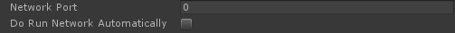
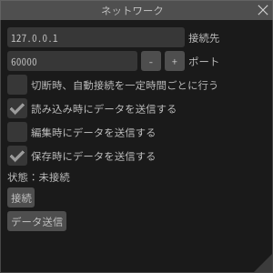

ネットワーク¶
概要¶
ネットワークに関するパラメーターを設定します。 ネットワーク経由でアプリケーション(ゲーム等)で再生しているエフェクトを外部からアプリケーションの起動中に編集することができます。 UnityやUnrealEngine4等、公式からEffekseerを使用するためのプラグインが提供されている環境では使用できます。 それ以外の環境ではEffekseerのランタイムを組み込んでいる人に相談してください。

使い方¶
エフェクトを書き換えられる側(アプリケーション)¶
各プラグインやライブラリによって異なります。 ネットワークを経由してエフェクトを書き換えるため、通信に使用するポートを指定します。 明示的に通信のためのサーバーを起動する関数を実行したり、自動的に関数が実行されるようにします。 そして、書き換えたいエフェクトを再生します。

Effekseer¶
Effekseerでは書き換えたいエフェクトの元になったファイルを開きます。 そして、ネットワークパネルから接続先を設定し、接続します。 エフェクトを編集し、「データ送信」ボタンを押します。 そうすると、アプリケーション内のエフェクトが書き換わります。

制限¶
アプリケーションで読み込むefkファイルのファイル名と編集するファイル名は同じである必要があります。 例えば、アプリケーションで「Laser.efk」を再生している場合、ツールでは「Laser.efkproj」を編集する必要があります。 また、アプリケーションに存在しない画像、モデル、音には編集が反映されません。
TIPS¶
同じコンピューターで起動しているアプリケーションのエフェクトを編集する場合、接続先には127.0.0.1を指定します。
パラメーター¶
接続先¶
アプリケーションを起動しているハードウェアのIPアドレスやDNSを記述します。
ポート¶
アプリケーションにて起動しているサーバーのポート番号を入力します。
切断時、自動接続を一定時間ごとに行う¶
どこにも接続されていないのなら、一定時間ごとに設定されている接続先に接続を試みます。
ファイル読み込み時にデータを送信する¶
ファイルを読み込んだ際に接続が確立しているなら、エフェクトのデータをアプリケーションに送信します。
編集時にデータを送信する¶
エフェクトを編集した際に接続が確立しているなら、エフェクトのデータをアプリケーションに送信します。
保存時時にデータを送信する¶
ファイルを保存した際に接続が確立しているなら、エフェクトのデータをアプリケーションに送信します。
データ送信¶
強制的にアプリケーションにエフェクトのデータを送信します。
接続¶
指定されている接続先に接続します。